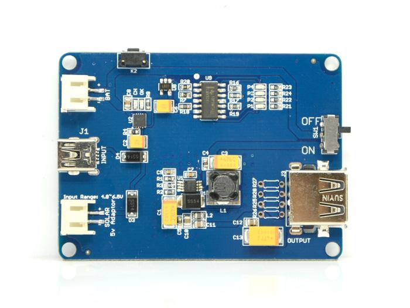
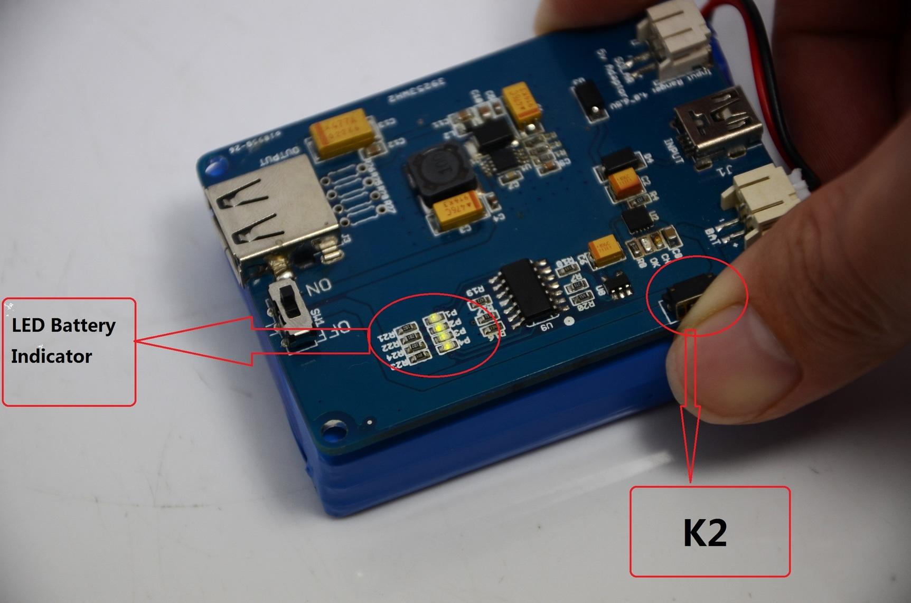
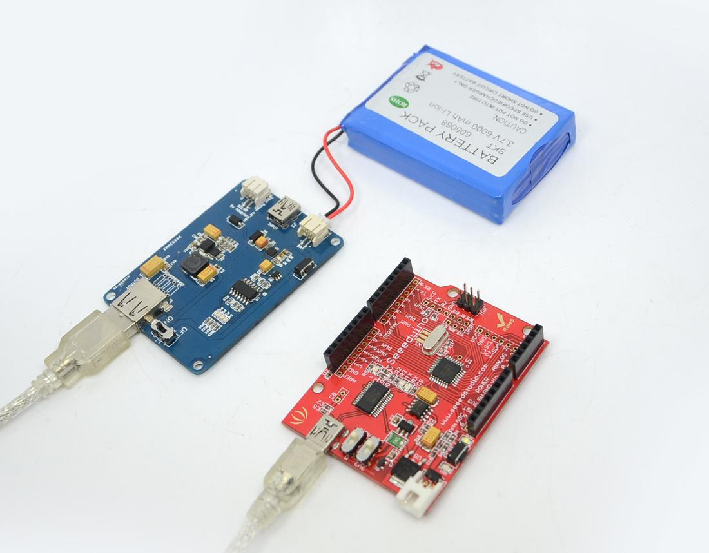
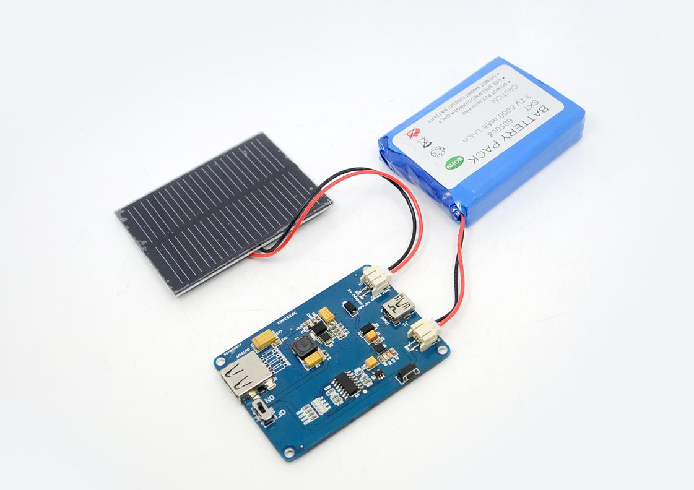

Power your favourite electronic kit with green energy! The LiPo Rider Pro is a promotion of Lipo Rider.It supply heavier load output(1A peak) than Lipo Rider. The LiPo Rider Pro board allows you ride the solar wave to run your favourite 5V device. The LiPo Rider Pro board is the ideal green power solution for your outdoor sensor design. Attach the LiPo Rider Pro board to your sensor board and it can run on solar power forever! It can also be used to charge mobile phone.
The LiPo Rider Pro is extremely affordable and easy to use. No programming is required. Plug it in and it works. The internal charger IC handles all the power flow between the various components.
In case solar power is not sufficient, the mini USB port allows you to charge your lithium battery through USB. It can also be used to program your kit without detaching the LiPo Rider Pro board.
The LiPo Rider Pro can be purchased as a separate board or as a kit (LiPo Rider Pro + Lithium Battery + Solar Panel) from Seeed Studio.
Model:POW12059P

The dimensions of LiPo Rider Pro is like the 6A Lithium Polymer Battery
| Items | Min | Norm | Max |
|---|---|---|---|
| Vin Solar | 4.8V | 5.0V | 6.5V(10s) |
| Icharge (RIset=3.9kΩ) | 400mA | 500mA | 600mA |
| Iload | 0mA | 1000mA | |
| Vbatt(Rx=0Ω) | 4.2V | ||
| Vsource USB | 5.0V | ||
| Vdestination USB | 5.0V | ||
| CH pin level(Red LED state) | OK pin level(Green LED state) | Statements |
|---|---|---|
| low level(on) | high level(off) | Charging |
| high level(off) | low level(last on) | Complete |
| pulse signal(flash) | pulse signal(on) | The battery isn't exist |
| high level(off) | high level(off) | Two situations :
|
The LiPo Rider Pro has four LED battery indicators like the cell phone,and you can see the battery power by just pressing the button K2 like below:

LED battery indicator parameter
| Numbers of lighting up | Quantity of electricity |
|---|---|
| 4 | 90~100% |
| 3 | 60~90% |
| 2 | 30~60% |
| 1 | 10~30% |
| 0 | 0~10% |
One important application of the Lipo Rider Pro board is as an affordable power supply for outdoor sensors. The outdoor sensor device will be powered by the lithium battery supplemented by the solar panel. Please note that it is not recommended to run the outdoor sensor ONLY on solar power, as this may vary during the day and may cause the sensor to reset / power down unexpectedly. In this case, the device is running in “USB Mode”.
If a firmware reprogram for the outdoor sensor device is required, simple connect the mini USB port to your PC which will put the device under “Program Mode” as explained above.
Larger/multiple batteries and/or solar panels can be used, but only with end-user modifications.


Please list your question here:
If you have questions or other better design ideas, you can go to our forum or wish to discuss.
| Revision | Descriptions | Date |
|---|---|---|
| Lipo Rider Pro v0.9b | Initial public release | Sept 20, 2011 |
The Additional Idea is the place to write your project ideas about this product, or other usages you've found. Or you can write them on Projects page.
Click here to buy Lipo Rider ,or other products you like.
This documentation is licensed under the Creative Commons Attribution-ShareAlike License 3.0 Source code and libraries are licensed under GPL/LGPL, see source code files for details.
Links to external webpages which provide more application ideas, documents/datasheet or software libraries
Copyright (c) 2008-2016 Seeed Development Limited (www.seeedstudio.com / www.seeed.cc)